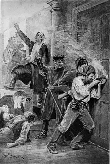
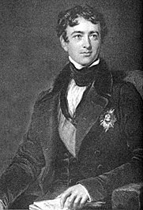
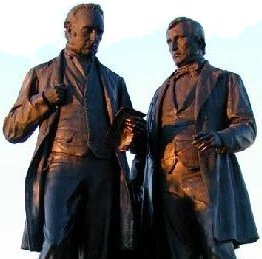

|

Jacques naît en 1813. Son
siècle est celui du Romantisme et de son vent de liberté qui souffle
sur le monde. Voici quelques dates importantes de l'actualité
canadienne durant la vie de Jacques..
1815
Papineau préside l`Assemblé législative et ce, presque sans
interruption, jusqu`en 1837.
 1832
Violence à Montréal à l`occasion d`une élection partielle. Les
troupes chargent la foule et tuent trois francophones. Grave épidémie
de choléra amenée d'Europe par les immigrants. 1832
Violence à Montréal à l`occasion d`une élection partielle. Les
troupes chargent la foule et tuent trois francophones. Grave épidémie
de choléra amenée d'Europe par les immigrants.
Depuis 1803 et jusqu'en 1850, une crise agricole affecte l'économie du
Bas-Canada. Les difficultés viennent du fait que les sols sont épuisés,
mal exploités et affectés par la maladie et les insectes, comme la
mouche du blé.
1834
Ludger Duvernay fonde à Montréal la Société St-Jean-Baptiste. Le
Parti patriote, dont le chef est Papineau, présente à l`Assemblée ses "92 Résolutions"
qui énoncent les griefs de la population contre le gouvernement britannique. Le
principal
problème est le contrôle des subsides. L'assemblée législative a le
pouvoir d'instaurer des taxes à la population. Mais le gouverneur peut
détourner les taxes et utiliser l'argent comme il l'entend. Les
patriotes réclament le contrôle des subsides, ce à quoi l'Angleterre
s'oppose. Comme réplique, Londres vote les
10 résolutions Russel, contraires à tout ce qui
est demandé. Les Canadiens-Français sont outragés et apportent leur
total accord au Parti patriote qui, en 1835, remporte une éclatante
victoire aux élections.
L'affrontement
est désormais inévitable entre les patriotes et les britanniques. Tout
d'abord, une série de mesures est adoptée comme moyens de pressions.
On décide alors de boycotter les produits anglais. On organise des
assemblées populaires, dont la plus importante sera l'assemblée des
six comtés à Saint-Charles sur le Richelieu, pour expliquer la
situation. Ces assemblées deviennent de plus en plus nombreuses.
L'église affiche alors son opposition à ces évènements, mais elle
n'a, à cette époque, que très peu d'influence.
 1836 Le gouverneur
Gosford, prévoyant la crise, instaure le régime militaire à Québec
ainsi qu'à Montréal. 1836 Le gouverneur
Gosford, prévoyant la crise, instaure le régime militaire à Québec
ainsi qu'à Montréal.
1837
Gosford tente une dernière
approche pour calmer les esprits. Il suspend les 10 résolutions Russel
et il est prêt à nommer quelques-uns des membres du parti patriote au
conseil exécutif. Mais les patriotes ne sont pas satisfaits de cette
offre et refusent. Le gouverneur n'a alors d'autre choix que de
dissoudre la chambre d'assemblée.
Par
la suite les manifestations verbales évoluent en violence et en
affrontements. Les premières escarmouches ont lieu dans les rues. Des
batailles opposent alors deux clubs de militaires volontaires, le Doric
Club (anglais) et les fils de la liberté (français), dans
lequel fait parti, le légendaire Jos Montferland, un costaud qui fait
figure de héros chez les Canadiens-Français. Voyant la situation
dégénérer dangereusement le gouverneur lance des mandats d'arrêts
contre 26 chefs patriotes, et il appelle des renforts armés du
Haut-Canada. Le Québec est maintenant en état de guerre.
 Le
23 novembre 1837, à Saint-Denis sur le Richelieu, après un dur
combat de six heures, les troupes anglaises battent en retraite devant
la résistance acharnée des patriotes. Ceux-ci sont énormément
encouragés par cette victoire inattendue qui sera malheureusement la
seule grande victoire des patriotes. À Saint-Charles, les
patriotes sont repoussés par l'armée britannique. Inférieurs en
nombre, et mal organisés, ils sont défaits malgré une lutte
courageuse. En guise de représailles, l'armée brûle des centaines de
maisons dans les villages avoisinants. Les patriotes, malgré les
défaites qui s'accumulent, persistent et reprennent la lutte à Saint-Eustache,
sous le commandement du docteur Chénier. Ils sont une fois de plus
repoussés par l'armée, et 70 d'entre eux se cachent dans une église.
L'armée les bombardent tout de même, et ils périssent alors brûlés,
le docteur Chénier étant du nombre. L'armée fait alors plusieurs abus
et brûle une fois de plus des centaines de maisons en guise de
représailles. La population est molestée, des femmes et
des enfants jetés hors de leurs demeures à l`approche de l`hiver.
1838
Les patriotes, dirigés par Robert Nelson, proclament, en février, la
République du Bas-Canada. En novembre, ils attaquent les troupes
anglaises à Lacolle et à Odelltown, mais sans succès. La seconde
répression est encore plus dure. D`autres village sont mis à sac et
incendiés. Près d`un millier de personnes sont arrêtées. Parmi
elles, 108 sont traduites devant les tribunaux, 58 seront déportées et
12 seront pendues à la prison du Pied-du-Courant à Montréal.
L`Angleterre, inquiète, envoie Lord Durham avec mission d`enquêter.
1839
 Après un séjour de six mois, Lord Durham présente un rapport
conseillant des mesures pour rétablir la paix. Son diagnostic est
clair: l`origine des problèmes du Bas-Canada n`est ni politique ni
administrative, mais vient de la coexistence forcée de deux nations
distinctes dans un même état. Il faut donc:
1) assurer par l`immigration une majorité anglaise et loyale;
2) angliciser les Canadiens français qui, dit-il, n`ont aucune
chance de survie dans une Amérique anglo-saxonne;
3) établir la responsabilité ministérielle (i.e. l`obligation
pour les ministres de quitter le pouvoir lorsque les députés leur
retirent leur confiance). Le gouvernement Britannique repousse cette
dernière suggestion.
1840
Pour mettre les Canadiens (i.e. les francophones) en état
d`infériorité politique, Londres sanctionne la loi de L`Union qui
réunit les deux Canada, désormais appelé le Canada-Uni, sous
un seul parlement et fait de l`Anglais la seule langue officielle. Cette
loi promulgue aussi la mise en commun des dettes des deux Canadas. Or,
la dette du Canada-Ouest est treize fois plus élevée que la dette du
Canada-Est.
Entre 1840 et 1850, environ 40 000 Canadiens français émigreront aux
États-Unis (900 000 entre 1840-1940). C'est aussi le début de
l'immigration irlandaise. Le port de Québec est alors la porte
d'entrée de tous ces gens qui, malheureusement, apportent avec eux le
typhus et le transmettent à la population locale. Cela entraîne le
développement de mesures sanitaires par le gouvernement.
1842
Mise en place du ministère Lafontaine-Baldwin, première
alliance de politiciens francophones et anglophones, qui durera jusqu`en
1849. Louis-Hippolyte Lafontaine réaffirme à la Chambre d`Assemblée
les droits du français comme langue parlementaire.
|

Monument, devant le Parlement d'Ottawa, de Baldwin et
Lafontaine,
les deux hommes considérés comme les premiers initiateurs du
Canada. |
1844
Le Parlement du Canada-Uni déménage de Kingston à Montréal.
1848
Le parlement britannique légalise de nouveau l`usage du français en
Chambre et dans les documents officiels et accorde le gouvernement
responsable.
Pourquoi l'Angleterre a-t-elle finalement accepté cela? Avec
l'Acte d'union, l'Angleterre espérait
que l'alliance des députés anglophones des deux Canadas mettrait les
députés francophones en minorité. Or, l'effet contraire s'est produit.
Les réformistes francophones et anglophones se sont alliés pour former une
coalition et être majoritaire à l'assemblée. Deuxième élément: l'Angleterre
voulant redresser son économie en difficulté, met fin au mercantilisme
(le commerce exclusif avec ses colonies) pour se livrer au libre-échange
avec les autres nations, surtout les États-Unis d'Amérique. À partir de
ce moment le contrôle strict de sa colonie devient un point beaucoup
moins important pour elle. L'Angleterre demande au gouverneur Lord
Elgin de respecter les volontés de l'Assemblée, ce qui veut dire la
responsabilité ministérielle.
Désormais,
le gouverneur et les conseils législatifs (le Sénat) n'ont plus aucun
pouvoir. Le conseil exécutif est dorénavant contrôlé par les députés.
Grâce à la coalition des parlementaires réformistes anglais et français,
c'est le début de ce qu'on nomme aujourd'hui la politique fédérale.
1849
 Émeute
à Montréal à cause de l`adoption de la loi qui indemnise les
sinistrés de 1837-38. Émeute
à Montréal à cause de l`adoption de la loi qui indemnise les
sinistrés de 1837-38.
The Gazette lance un appel aux armes. Des anglophones brûlent le
parlement canadien, qui quittera définitivement Montréal.
1864
Conférences de Charlottetown et de Québec pour préparer la
Confédération canadienne. Durant l`été, de jeunes nationalistes
Montréalais se rangent derrière Médéric Lanctôt et prônent la
création d`un Québec indépendant.
1865
Le Parlement du Canada-Uni est établi définitivement à Ottawa.
1867
La Confédération canadienne.

|